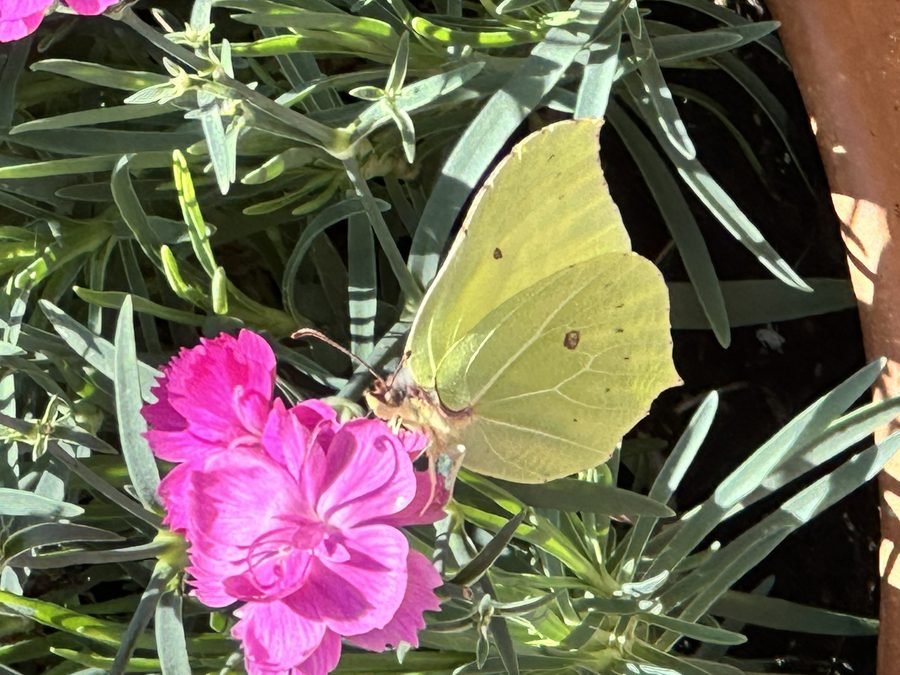
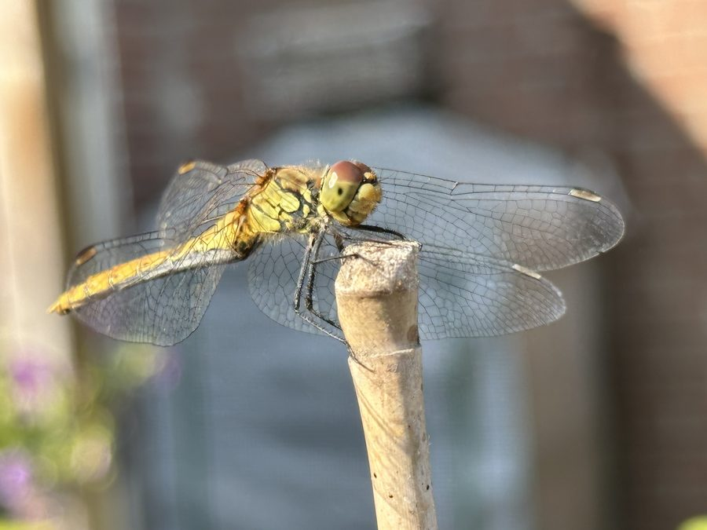
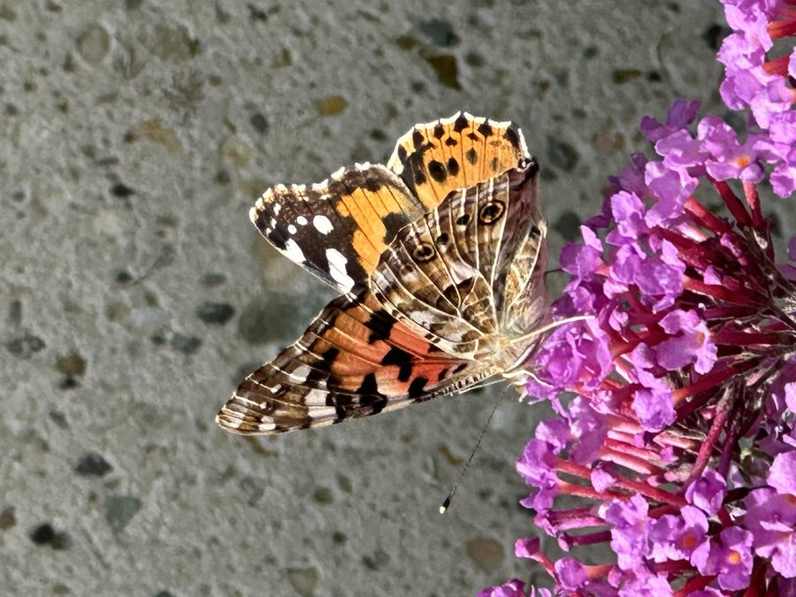
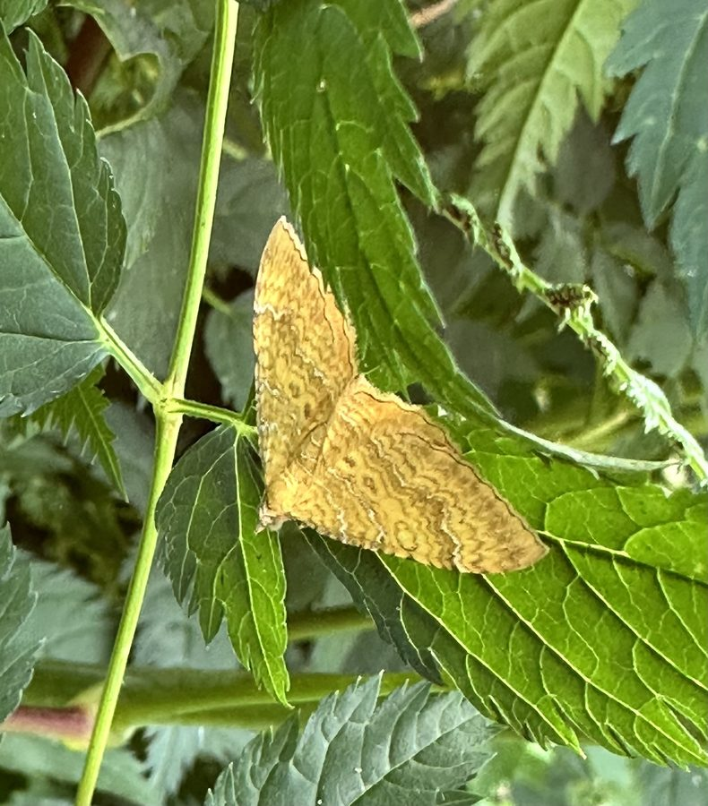
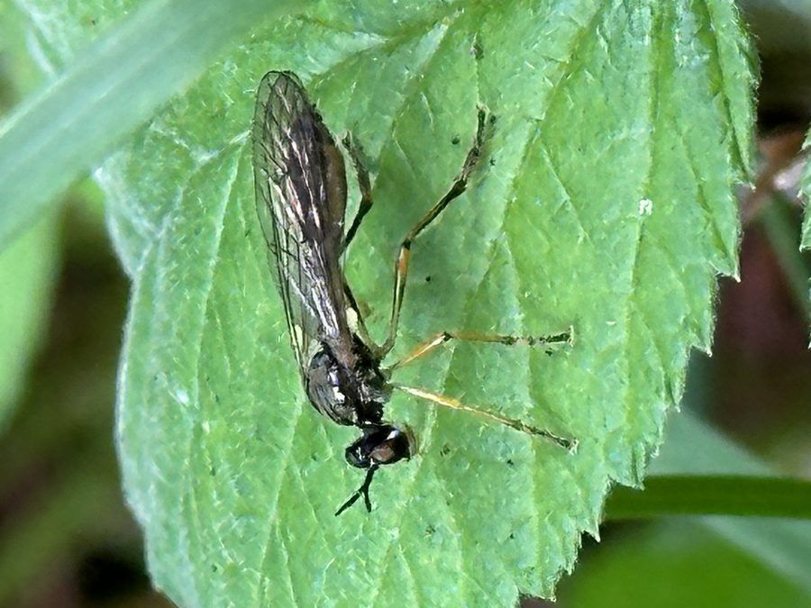
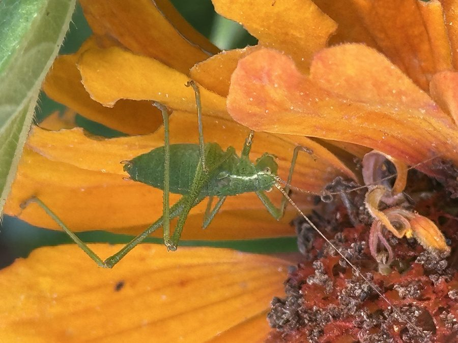
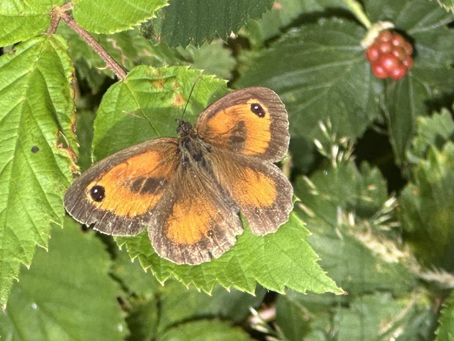
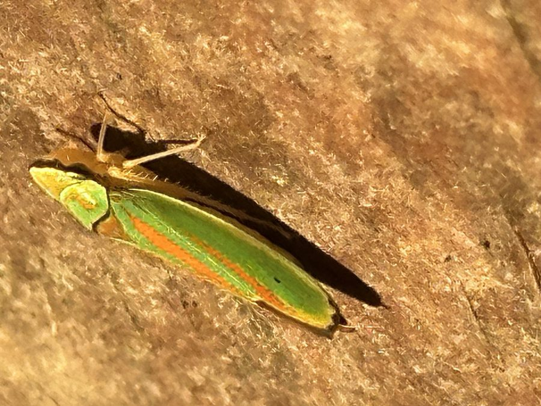
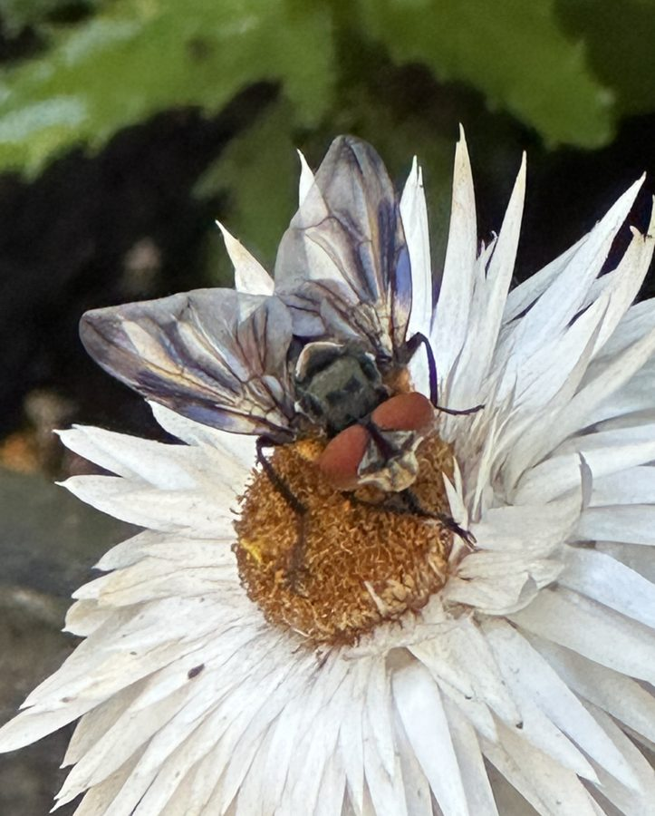
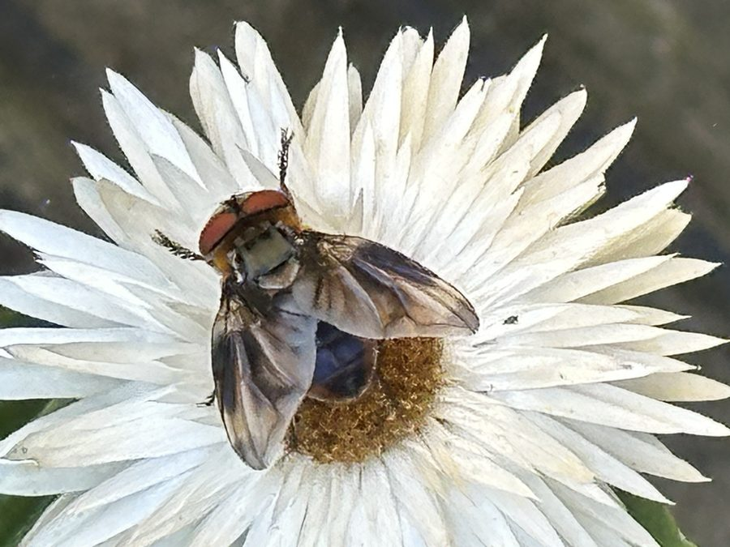

01
Citroenvlinder
Gonepteryx rhamni
Rustend op een roze anjer, elke schub scherp vastgelegd.
Bekijk als print →Insectenfotografie nieuw
Naast het zand heeft Gridje nog een andere passie: macrofotografie van insecten. Close-ups van vleugels, facetogen en schubben — net zo veel geduld en precisie als een zandschildering.

Gonepteryx rhamni
Rustend op een roze anjer, elke schub scherp vastgelegd.
Bekijk als print →
Sympetrum striolatum
Doorschijnende vleugels op een takje, in extreem detail.
Bekijk als print →
Vanessa cardui
Voedend op vlinderstruikbloesem, kleurrijk en scherp.
Bekijk als print →
Camptogramma bilineata
Golvende vleugeltekening, rustend op een blad.
Bekijk als print →
Dioctria linearis
Een roofzuchtige jager, haarscherp op een blad vastgelegd.
Bekijk als print →
Leptophyes punctatissima
Doorschijnend groen lijfje op een felle oranje bloem.
Bekijk als print →
Pyronia tithonus
Rustend op een blad, met een lieveheersbeestje op de achtergrond.
Bekijk als print →
Graphocephala fennahi
Felle turquoise-met-rode kleuren, moeilijk met het blote oog te zien.
Bekijk als print →
Phasia hemiptera
Geaderde vleugels, tegenlicht op een duin-strobloem.
Bekijk als print →
Phasia hemiptera
Symmetrische compositie op een duin-strobloem.
Bekijk als print →Deze macrofoto's zijn nu te koop als fine art print via onze Etsy-shop GridjeMacro — als losse poster of als digitale download om zelf te printen.
Bestel als print via Etsy →